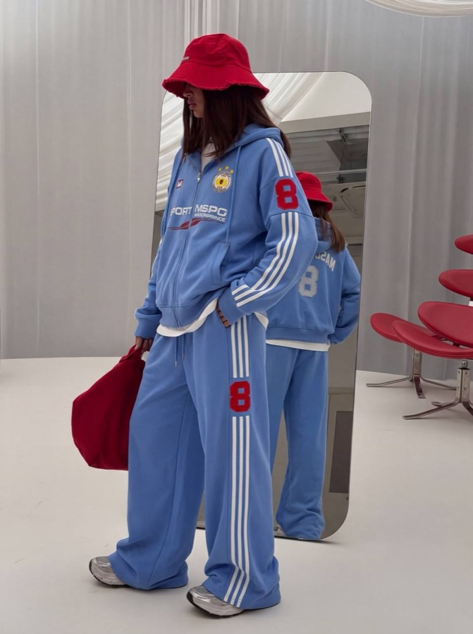
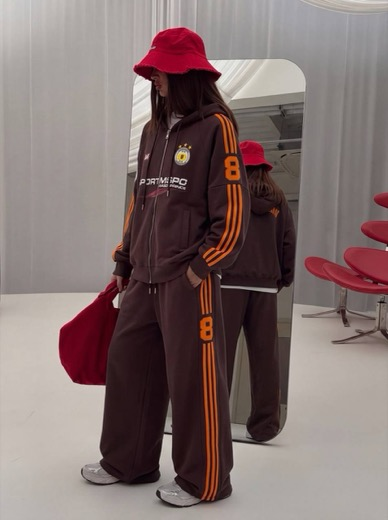
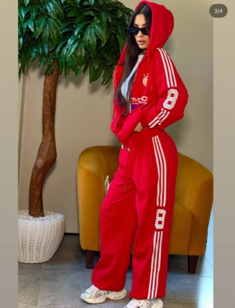
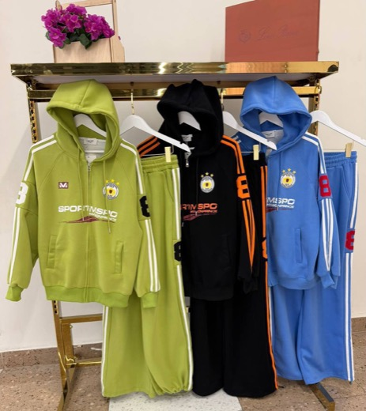

ZEDDD оформляет объявления поставщиков одежды рынка «Садовод» в аккуратные карточки товара и публикует их в Telegram-канал и сообщество ВКонтакте поставщика. Без ручного копирования в каждую площадку.
Поставщик ничего не настраивает сам: присылает товар и подтверждает публикацию.
Фото и описание: цена, размеры, ткань — в Telegram-бота сервиса.
Цены, размеры и состав разбираются из текста поставщика и собираются по единому шаблону.
Готовый пост приходит на просмотр. Ничего не публикуется без кнопки «Выложить».
Пост выходит в Telegram-канал поставщика и на стену его сообщества ВКонтакте.
Один и тот же товар. Для ВКонтакте отдельная версия текста: без эмодзи и без ссылок на сторонние мессенджеры — покупатель пишет напрямую в сообщество.




Вход выполняется через VK ID. Сервис работает только со стенами тех сообществ, где у вошедшего аккаунта есть права администратора или редактора.
| Доступ | Методы API | Для чего |
|---|---|---|
| Фотографии (photos) | photos.getWallUploadServerphotos.saveWallPhoto | Загрузить фото товара для записи на стене сообщества. |
| Стена (wall) | wall.post | Опубликовать запись с товаром на стене сообщества от имени сообщества. |
| Не запрашиваем | Личные сообщения, друзья, публикации на личной странице, комментарии, данные подписчиков. | |
Так администратор сообщества подключает свой аккаунт к сервису. Здесь можно проверить вход: после него страница покажет ваше имя.
Откроется страница ВКонтакте, затем вы вернётесь на сайт.
По вопросам подключения и работы сервиса пишите во ВКонтакте.
Написать во ВКонтакте